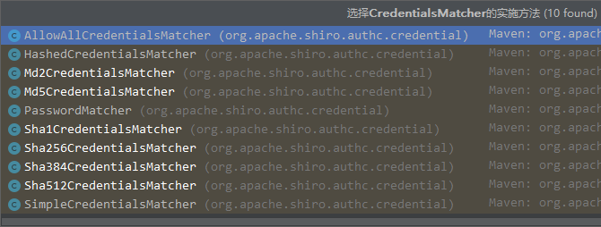
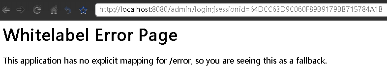

springboot整合shiro（续）
在之前的文章里，介绍了shiro的基础以及如何与springboot中基于web项目的整合，并同时结合了mybatis的使用。
此文将着重讲解其中潜藏问题的处理，以及后续功能的扩展完善。
一、没有被BPP处理的Beans
BPP即BeanPostProcessor
BeanPostProcessor是Spring中Bean工厂的钩子（Hook），允许Spring框架在新创建Bean实例时对其进行定制化修改。它本身也是一个Bean，在通常情况下，其实例化顺序要优先于普通的Bean。因为有时BeanPostProcessor也会依赖一些Bean，所以，会存在一些普通Bean的实例化早于BeanPostProcessor的情况，因此就会造成一些问题。
1、问题复现
按照shiro官方的例子spring-boot-web配置shiro即可复现（以及大多数springboot整合shiro的教程）。启动日志中，会有数个类似如下消息的提示
Bean ‘securityManager’ of type [org.apache.shiro.web.mgt.DefaultWebSecurityManager] is not eligible for getting processed by all BeanPostProcessors (for example: not eligible for auto-proxying)
对于spring来说，这是info级别的日志输出，因为此现象对程序运行不会产生影响，但对于使用功能上来说是会出问题的，例如：事务失效、缓存失效、数据源失效等权限框架涉及的数据处理可能会出问题，所以需要解决。
2、成因简析
详细的分析可以参考这篇文章：BeanPostProcessor加载次序及其对Bean造成的影响分析
简单来说大概是因为shiro一系列bean的初始化要早于数据访问层的bean，而又在Realm中注入了DAO等数据访问层的类，导致数据访问层相关的bean被提前初始化，没有被后续的BeanPostProcessor处理。
这对于shiro来说没什么影响，而对于需要事务、缓存等功能的数据访问层来说就很致命了。目前百度的结果大多数处理方法都无法完全解决问题，比较简单有效的方法是在Realm中注入的DAO加个@Lazy注解将其延后，例如：
1 |
|
这样会使shiro的bean等待数据层的bean初始化完成后再执行。如果仅处理数据层的问题，现在已经完成了，再次启动项目，上述info级的日志仅剩下securityManager、realm、shiroConfig（后两个是自己项目中定义的Realm类和shiro配置类）
3、彻底消除影响
最无奈的莫过于知道问题如何产生的，但不知道如何解决。百度无果后，尝试谷歌，使用关键词shiro BeanPostProcessor搜索终于在stackoverflow上找到了答案。
其中一篇是Spring is ignoring @Transactional annotations in Apache Shiro Realm class。给出的处理方案是在securityManager中不要setRealm，而是继承ServletContextListener接口，在contextInitialized方法中把Realm设置到securityManager中：
1 |
|
实践后发现与使用@Lazy注解的方式相差不大，倒是启动速度好像快了一点点，感觉这种方式比使用@Lazy注解更符合程序逻辑。
另外一篇是Apache Shiro JdbcRealm with JavaConfig and Spring Boot，高赞回答的大佬剖析的更深了：
最简单的解决方案是确保任何与基础设施相关的bean都是用静态方法定义的。这告诉Spring它不需要初始化整个配置类（即WebSecurityConfig）。
1 |
|
但这似乎没有完全解决，因为ShiroFilterFactoryBean也实现了BeanPostProcessor，和数据源造成了冲突导致无法初始化。
不幸的是，你不能简单地将ShiroFilterFactoryBean定义为静态的，因为它依赖于其他bean定义。幸运的是，在这个实例中确实不需要BeanPostProcessor。这意味着你可以更改代码以返回factory bean的结果，该bean相当于移除了BeanPostProcessor
示例如下，只是把返回值类型改成了AbstractShiroFilter，它是ShiroFilterFactoryBean的抽象父类，返回值转换类型即可
1 |
|
注意：如果要改为如上处理方式，不能使用shiro-spring-boot-web-starter依赖，而是shiro-spring
现在启动程序，“not eligible for getting processed by all BeanPostProcessors”相关的提示已经完全消失了。
二、使用加密的密码
shiro提供了一些简单的基础加密功能，接口类是CredentialsMatcher，默认使用的实现类是SimpleCredentialsMatcher，即直接明文比对，可以使用的实现类如下：

虽然哈希类型的加密算法（也称消息摘要）是不可逆的，也就是无法通过解密来获取原文。但原文和密文有唯一对应关系，比如常用的MD5，123456对应密文为e10adc3949ba59abbe56e057f20f883e。这样的话可以通过类似彩虹表的方式破解，密码的安全性就变低了。所以需要使用更安全的算法（例如bcrypt）来代替MD5。
shiro没有bcrypt算法的实现，需要引入额外的依赖：
1 | <dependency> |
这是一个基于JBcrypt，但是经过了大量的重构、更新和增强的一个Bcrypt Java Library and CLI Tool。使用方法很简单，在Realm实例里setCredentialsMatcher使用lamda表达式设置，返回比对结果true or false即可
1 |
|
token是在认证(authentication)期间获得的认证令牌，也就是doGetAuthenticationInfo方法中的参数AuthenticationToken；info即AuthenticationInfo是在认证(authentication)期间的返回值，它是储存于系统（通常是数据库）的认证信息
三、保存会话
1、记住我
大多数网站的登录都会有个“记住我”的功能选项，像下面这样：
1.1 开启功能
在前端，使用input:checkbox即可，name在后端对应参数接收，value为true即可
1 | <input type="checkbox" name="remember-me" value="true"><span>七天内免登录</span> |
因为在未勾选时是不会传值的，所以在controller中需要设置一个非必须的标记（默认为true）
1 | Boolean rememberMe |
然后就可以设置了
1 | Subject subject = SecurityUtils.getSubject(); |
1.2 设置时效
默认的“记住我”时效为一年，这是在CookieRememberMeManager中的构造函数设置的：
1 | public CookieRememberMeManager() { |
shiro在注释中给出了一年时长的理由。如果我们确实有需求改变这个值也可以，在securityManager中即可设置：
1 | Cookie cookie = ((CookieRememberMeManager) securityManager.getRememberMeManager()).getCookie(); |
这个是shiro实现的Cookie不是servlet的Cookie，但设置方式和后者无异。注意是先将getRememberMeManager获得的对象转换为CookieRememberMeManager，然后再getCookie
2、当前会话（session）
默认情况下，启动应用程序第一次访问时，会在URL后面加冒号跟一个参数JSESSIONID与值，在springboot-web环境下会直接跳转到400错误页，去掉参数后再次访问就正常了，此时JSESSIONID保存在了cookie里

要避免这样的情况，依旧是在securityManager设置：
1 | sessionManager.setSessionIdUrlRewritingEnabled(false); |
要想修改这个cookie的名字也可以：
1 | Cookie sessionIdCookie = sessionManager.getSessionIdCookie(); |
改值的话会稍微麻烦点，这里使用了lamda表达式：
1 | MemorySessionDAO sessionDAO = (MemorySessionDAO) sessionManager.getSessionDAO(); |
shiro默认的sessionID生成方法JavaUuidSessionIdGenerator如下，仅仅只是返回了一个随机的UUID
1 | public class JavaUuidSessionIdGenerator implements SessionIdGenerator { |